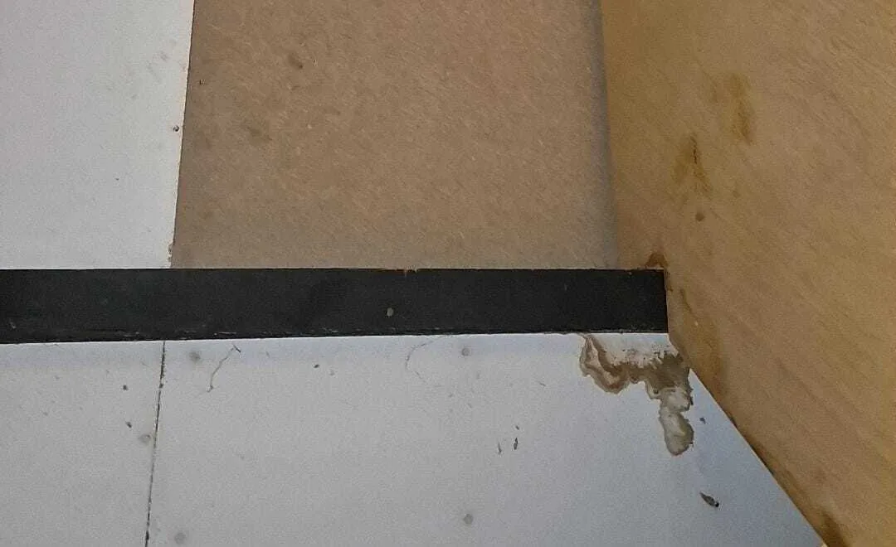
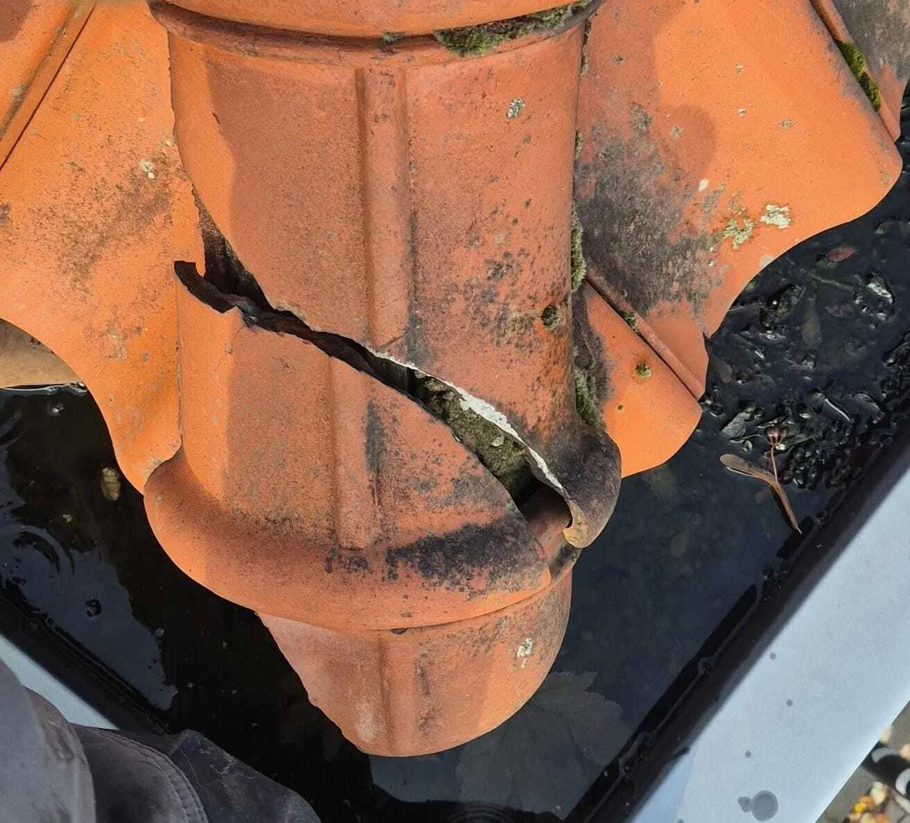
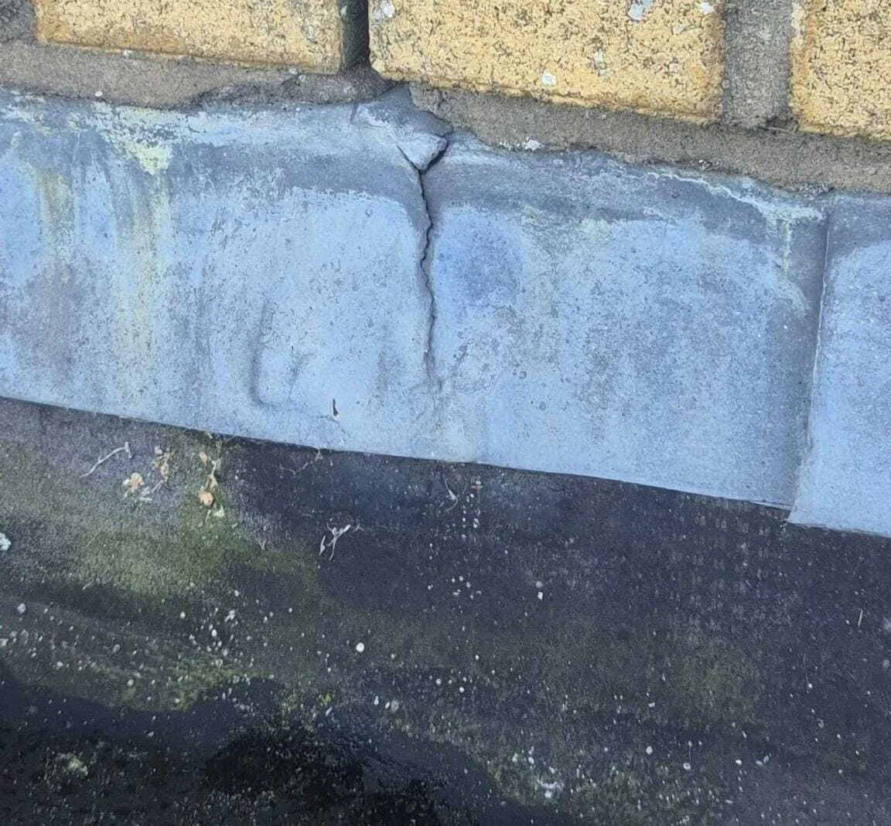

Ruiterrol / afdichting verouderd
Rubber of schuim verliest soepelheid. Kieren bij winddruk zorgen dat regen onder de nok kan komen.
Een noklekkage ontstaat zelden in één nacht. De nok is het hoogste en meest belaste punt van het dak: wind trekt er het hardst, regen slaat er dwars op in en temperatuurschommelingen werken continu op de afdichting. Als je binnen vocht ziet bij de noklijn, is dat vaak het signaal dat de afdichting al langere tijd zijn functie verliest.
Het lastige: water kan zich onder pannen en onderdakfolie verplaatsen. Daardoor zit de zichtbare plek binnen niet altijd recht onder de losse nokvorst. Wie direct “dichtsmeert”, pakt soms het symptoom aan en laat de echte oorzaak zitten. De slimste route is bijna altijd: eerst oorzaak vaststellen, daarna pas duurzaam herstellen.

De nok is het detail waar twee dakvlakken samenkomen. Details zijn altijd gevoeliger dan het dakvlak zelf: er zitten meer overgangsstukken, meer bevestigingen en meer plekken waar materiaal kan werken. Bij pannendaken spelen vooral de nokvorsten, de ruiterrol (of ondervorst), ventilatie en de manier van vastzetten een rol. Als één onderdeel veroudert of loskomt, ontstaat er ruimte voor water en wind om onder de nok te komen.
Daar komt bij dat de nok vanuit alle windrichtingen belast wordt. Bij harde wind ontstaat er druk en onderdruk rondom de nok, waardoor water tijdens slagregen letterlijk naar binnen kan worden geduwd. Trillingen door storm, het uitzetten en krimpen van hout en temperatuurschommelingen versnellen die slijtage. Daarom zie je bij noklekkage vaak een patroon: eerst kleine kieren, daarna vocht in de constructie, en pas als laatste de zichtbare plek binnen.
Rubber of schuim verliest soepelheid. Kieren bij winddruk zorgen dat regen onder de nok kan komen.
Beweging door wind of trillingen maakt dat overlap niet meer klopt. Water vindt dan een route naar binnen.
Oudere nokken op specie krijgen scheuren. Vocht trekt via capillaire werking naar binnen.
Als folie los of beschadigd is, verplaatst water zich makkelijker richting het interieur.
Goed om te weten: Bij een noklekkage kan de daadwerkelijke oorzaak óók naast de nok liggen, bijvoorbeeld bij een doorvoer, aansluiting of lood in de buurt. Daarom is “even één nokvorst vastzetten” niet altijd voldoende.
De eerste signalen van een noklekkage zijn vaak subtiel. Denk aan een vochtplek op het dakbeschot vlak onder de noklijn, verkleuring rond spijkers, schimmelvorming op zolder, of isolatie die op één plek vochtig wordt. Soms merk je het alleen aan een muffe geur. Bij harde wind kan de lekkage actiever worden doordat winddruk water onder de nok duwt.
Belangrijk: de schade zit zelden exact onder een losse nokvorst. Water kan via pannen, panlatten of folie “omlopen” en pas verderop zichtbaar worden. Als de oorzaak onduidelijk is, is lekkage opsporen vaak de meest betrouwbare stap: je voorkomt daarmee dat je alleen het symptoom behandelt.
Een snelle ‘quick fix’ aan de buitenkant kan het probleem verplaatsen. Eerst oorzaak vaststellen, dan gericht herstellen = meestal goedkoper én duurzamer.

Bij een actieve noklekkage is snelheid belangrijk, maar gokken werkt averechts. Als water nu binnendringt, wil je vooral voorkomen dat de schade groter wordt: natte isolatie, schimmel, aangetast hout of plekken in het plafond. Tegelijk wil je vermijden dat je onnodige reparaties laat uitvoeren op de verkeerde plek.
De meest praktische route is meestal: (1) vaststellen waar het water binnenkomt, (2) begrijpen waarom het detail faalt, (3) kiezen voor een passende oplossing. Dat klinkt logisch, maar in de praktijk slaan mensen stap 2 over. Het gevolg: water zoekt een nieuwe route en de lekkage komt terug.
Is er actieve lekkage? Wanneer gebeurt het (wind/regen)? Waar zie je het binnen?
Inspectie of gericht opsporen om de echte ingang te vinden (niet de zichtbare plek).
Ruiterrol, specie, bevestiging, folie of combinatie? Dat bepaalt wat duurzaam herstel is.
Nok opnieuw opbouwen of afdichting vervangen zodat het detail weer wind- en waterdicht is.
Als je na een storm ineens lekkage ziet, betekent dat niet automatisch “stormschade”. Soms maakt storm een bestaand zwak punt zichtbaar. Diagnose voorkomt discussie én dubbele kosten.
Niet elke noklekkage vraagt dezelfde aanpak. Soms zie je buiten al een duidelijke losse nokvorst of een versleten ruiterrol; dan kan een gratis dakinspectie voldoende zijn om de oorzaak vast te stellen en een plan te maken. Maar als je binnen schade ziet en buiten niets overtuigend, dan is lekkage opsporen vaak de snelste route naar zekerheid.
Blijkt dat de nokconstructie als geheel zijn functie verliest, dan kom je uit bij een structurele oplossing zoals nokrenovatie. En zitten er zwakke plekken bij aansluitingen in de buurt van de nok (bijvoorbeeld verouderd lood), dan kan daklood vervangen onderdeel van de oplossing zijn. Door de puzzel eerst scherp te krijgen, voorkom je dat je één onderdeel repareert terwijl een tweede zwaktepunt blijft lekken.
Ideaal bij twijfel of bij zichtbare schade buiten. Je krijgt inzicht in conditie, risico’s en logische vervolgstap.
Ideaal als je binnen lekkage ziet maar de ingang onduidelijk is. Voorkomt repareren op gevoel.
Als de nok als detail faalt: opnieuw opbouwen met nieuwe afdichting en bevestiging voor lange termijn.
Als aansluitingen rond de nok (of in de buurt) zwak zijn: lood vernieuwen zodat water geen route krijgt.

Blijkt uit onderzoek dat de nokconstructie zijn functie verliest, dan is herstel of vervanging noodzakelijk. In de praktijk betekent dit vaak: de nok (deels) losnemen, onderliggende afdichting en bevestiging beoordelen en vernieuwen, en de nok vervolgens opnieuw opbouwen zodat hij weer bestand is tegen wind, regen en temperatuurwerking.
Duurzaam oplossen is meestal niet “meer kit”, maar een detail dat weer klopt: juiste ventilatie, correcte overlap, sterke bevestiging en een afdichting die past bij het daktype. Soms is er ook aandacht nodig voor aansluitingen in de buurt van de nok, zoals lood of doorvoeren. Een noklekkage kan namelijk samengaan met andere zwakke plekken. Daarom combineren we waar nodig beoordeling van nok, aansluitingen én waterroute.
Tip: Laat na herstel kort controleren of de waterroute echt is gestopt. Na de eerste stevige regenbui geeft dat rust (en voorkomt dat je pas maanden later weer verrast wordt).
De kosten hangen sterk af van oorzaak en omvang. Een kleine ingreep (bijvoorbeeld een beperkt stuk nok opnieuw vastzetten of een ruiterrol vervangen) is iets anders dan het volledig opnieuw opbouwen van een lange nok. Ook bereikbaarheid (steiger, hoogte, dakvorm) speelt mee. Daarom is een eerste beoordeling belangrijk: je voorkomt dat je betaalt voor werk dat de echte oorzaak niet raakt.
Wat vrijwel altijd geldt: hoe langer je wacht, hoe groter de kans dat vocht isolatie en hout aantast. Dan betaal je niet alleen voor nokherstel, maar ook voor herstel aan binnenzijde of constructie. Tijdig ingrijpen is meestal goedkoper dan “repareren na schade”.
Na zware wind: check of nokvorsten nog strak liggen en of er geen zichtbare verschuiving is.
Broze ruiterrol, scheurtjes in specie of losse randen zijn signalen dat afdichting zijn beste tijd heeft gehad.
Een nok moet niet alleen dicht zijn, maar ook technisch kloppen qua ventilatie en overlap.
Kit zonder diagnose kan water opsluiten of naar een andere plek sturen, met extra schade tot gevolg.
Meestal niet. Het is vaak een proces van slijtage. Een storm of slagregen maakt het vervolgens zichtbaar.
Omdat water zich onder pannen en folies kan verplaatsen. De plek die je ziet is vaak het einde van de route.
Als je binnen schade ziet maar buiten geen duidelijke oorzaak. Dan is opsporen de snelste weg naar gericht herstel.
Ja. Bij twijfel kan een inspectie risico’s rond nokvorsten, ruiterrol en aansluitingen in kaart brengen.
Dat verschilt per dak, maar vaak gaat het om de nok opnieuw opbouwen met nieuwe afdichting en bevestiging. Soms gecombineerd met herstel van aansluitingen (zoals daklood).
Een noklekkage is meestal het gevolg van slijtage en beweging op het meest belaste deel van het dak. De beste route is bijna altijd: eerst oorzaak vaststellen, daarna pas herstellen. Zo voorkom je dat schade zich herhaalt, verplaatst of groter wordt. Wil je snel duidelijkheid en verdere schade voorkomen? Laat je situatie beoordelen en kies de juiste vervolgstap.